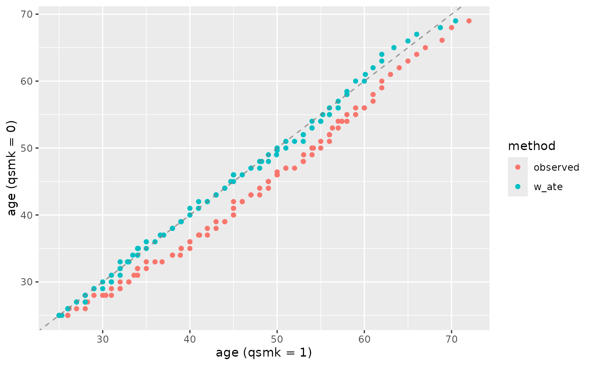
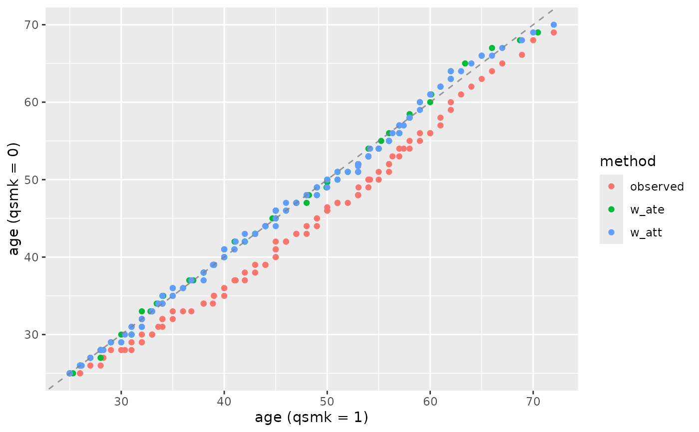

Create quantile-quantile (QQ) plots to compare the distribution of variables between treatment groups before and after weighting. This function helps assess covariate balance by visualizing how well the quantiles align between groups.
Usage
plot_qq(
.data,
.var,
.group,
.wts = NULL,
quantiles = seq(0.01, 0.99, 0.01),
include_observed = TRUE,
treatment_level = NULL,
na.rm = FALSE
)Arguments
- .data
A data frame containing the variables.
- .var
Variable to plot. Can be unquoted (e.g.,
age) or quoted (e.g.,"age").- .group
Column name of treatment/group variable. Can be unquoted (e.g.,
qsmk) or quoted (e.g.,"qsmk").- .wts
Optional weighting variable(s). Can be unquoted variable names, a character vector, or NULL. Multiple weights can be provided to compare different weighting schemes. Default is NULL (unweighted).
- quantiles
Numeric vector of quantiles to compute. Default is
seq(0.01, 0.99, 0.01)for 99 quantiles.- include_observed
Logical. If using
.wts, also show observed (unweighted) QQ plot? Defaults to TRUE.- treatment_level
The reference treatment level to use for comparisons. If
NULL(default), uses the last level for factors or the maximum value for numeric variables.- na.rm
Logical; if TRUE, drop NA values before computation.
Details
QQ plots display the quantiles of one distribution against the quantiles of another. Perfect distributional balance appears as points along the 45-degree line (y = x). This function automatically adds this reference line and appropriate axis labels.
For an alternative visualization of the same information, see geom_ecdf(),
which shows the empirical cumulative distribution functions directly.
See also
geom_ecdf()for ECDF plots, an alternative distributional visualizationgeom_qq2()for the underlying geom used by this functionqq()for computing QQ data without plotting
Examples
library(ggplot2)
# Basic QQ plot (observed)
plot_qq(nhefs_weights, age, qsmk)
# With weighting
plot_qq(nhefs_weights, age, qsmk, .wts = w_ate)

# Compare multiple weighting schemes
plot_qq(nhefs_weights, age, qsmk, .wts = c(w_ate, w_att))

# For propensity scores
plot_qq(nhefs_weights, .fitted, qsmk, .wts = w_ate)
# Without observed comparison
plot_qq(nhefs_weights, age, qsmk, .wts = w_ate, include_observed = FALSE)